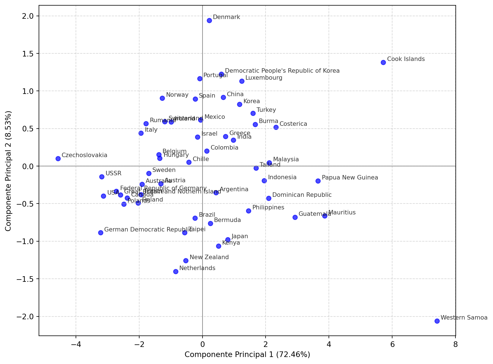
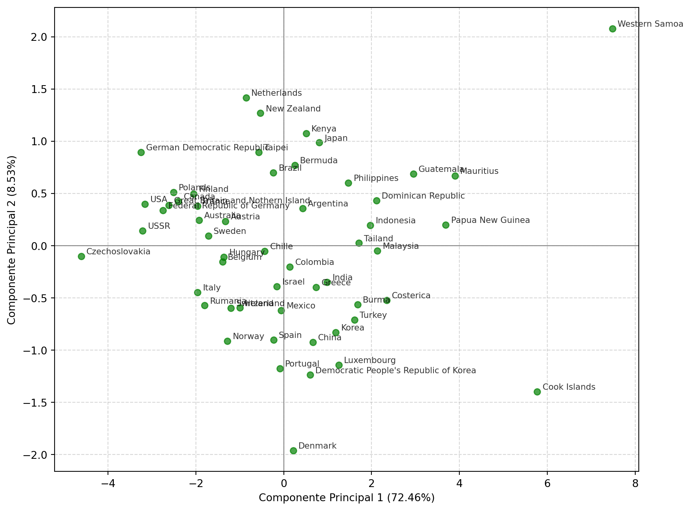

for i in range(1, 11):
print(i)1
2
3
4
5
6
7
8
9
10for i in range(1, 11):
print(i)1
2
3
4
5
6
7
8
9
10Diferencias con R: En Python, la función range(a, b) genera una secuencia que excluye el límite superior (b), por lo que debemos escribir range(1, 11) para llegar hasta el 10. En R, la sintaxis equivalente 1:10 es inclusiva en ambos extremos. Además, Python define la estructura del bucle mediante indentación obligatoria, mientras que R utiliza llaves {}.
numeros = list(range(1, 11))
print(numeros[::-1])[10, 9, 8, 7, 6, 5, 4, 3, 2, 1]Diferencias con R: En Python, la inversión de una lista se realiza habitualmente mediante slicing con un paso negativo (lista[::-1]) o usando el método .reverse(). En R, existe una función específica llamada rev() para invertir vectores. Además, nótese que la lista en Python se define explícitamente con corchetes [], mientras que en R usamos la función de concatenación c().
for i in range(1, 11):
if i % 2 == 0:
print(i)2
4
6
8
10Diferencias con R: La principal diferencia sintáctica aquí es el operador módulo (resto de la división): en Python se utiliza el símbolo %, mientras que en R se utiliza %%. Además, al igual que en los bucles, la estructura condicional if en Python depende de la indentación y termina en dos puntos :, mientras que en R requiere el uso de paréntesis para la condición y llaves para el bloque de código.
datos = {
"nombre": "Juan",
"edad": 25,
"ciudad": "Granada"
}
print(datos["ciudad"])GranadaDiferencias con R: En Python, esta estructura de datos clave-valor se denomina diccionario y se define con llaves {}. Para acceder a los valores usamos corchetes con la clave: datos[“ciudad”]. En R, la estructura equivalente es una lista con nombres (named list), que se crea con list(clave = valor). Además, en R es común acceder a los elementos usando el operador $ (ej. datos$ciudad), algo que no existe en los diccionarios estándar de Python.
import random
def calcular_cuadrado(numero):
return numero ** 2
numero_aleatorio = random.randint(1, 50)
print(numero_aleatorio)
print(calcular_cuadrado(numero_aleatorio))30
900Diferencias con R: Para definir funciones en Python utilizamos la palabra clave def seguida del nombre, paréntesis y dos puntos :, mientras que en R asignamos el resultado de function() a una variable (nombre <- function(…)). Otra diferencia clave es el operador de potencia: en Python es exclusivamente **, mientras que en R se admite tanto ^ como el operador anterior. Por último, para generar aleatorios en Python estándar necesitamos importar el módulo random, mientras que R dispone de funciones nativas como sample() cargadas por defecto.
def verificar_palindromo(texto):
texto_limpio = texto.lower()
if texto_limpio == texto_limpio[::-1]:
print(f"'{texto}' SI es un palíndromo.")
else:
print(f"'{texto}' NO es un palíndromo.")
verificar_palindromo("Reconocer")
verificar_palindromo("Estadística")'Reconocer' SI es un palíndromo.
'Estadística' NO es un palíndromo.Diferencias con R: El manejo de cadenas en Python es orientado a objetos: usamos métodos como .lower() que pertenecen al propio objeto string. En R, usaríamos funciones externas como tolower(texto). La diferencia más notable es la inversión: en Python es trivial con [::-1]. En R base no existe una función directa para invertir una cadena de texto completa; se requiere un proceso más verboso dividiendo los caracteres, invirtiéndolos y volviéndolos a unir (paste(rev(strsplit(x, ““)[[1]]), collapse=”“)) o el uso de paquetes como stringi.
import os
import pandas as pd
import numpy as np
import matplotlib.pyplot as plt# 1. Cargar el conjunto de datos
df = pd.read_csv('women_track_records.csv')
# 2. Eliminar filas con valores faltantes
df_clean = df.dropna()
print(f"Dimensiones originales: {df.shape}")
print(f"Dimensiones tras limpiar: {df_clean.shape}")
print("\nPrimeras filas:")
print(df_clean.head())Dimensiones originales: (55, 8)
Dimensiones tras limpiar: (54, 8)
Primeras filas:
COUNTRY X1 X2 X3 X4 X5 X6 X7
0 Argentina 11.61 22.94 54.50 2.15 4.43 9.79 178.52
1 Australia 11.20 22.35 51.80 1.98 4.13 9.08 152.37
2 Austria 11.43 23.09 50.62 1.99 4.22 9.34 159.37
3 Belgium 11.41 23.04 52.00 2.00 4.14 8.88 157.85
4 Bermuda 11.46 23.05 53.30 2.16 4.58 9.81 169.98X = df_clean.drop('COUNTRY', axis=1).values
paises = df_clean['COUNTRY'].values
# 3. Estandarización
media = np.mean(X, axis=0)
desv_std = np.std(X, axis=0, ddof=1)
X_std = (X - media) / desv_std
# 4. Matriz de Covarianza
cov_matriz = np.cov(X_std, rowvar=False)
print("Media de las primeras variables:")
print(np.round(np.mean(X_std, axis=0), 2))
print("\nForma de la matriz de covarianza:")
print(cov_matriz.shape)
print("\nPrimeras filas de la matriz de covarianza:")
print(np.round(cov_matriz[:3, :3], 2))Media de las primeras variables:
[ 0. 0. -0. 0. 0. 0. 0.]
Forma de la matriz de covarianza:
(7, 7)
Primeras filas de la matriz de covarianza:
[[1. 0.88 0.71]
[0.88 1. 0.71]
[0.71 0.71 1. ]]val_propios, vec_propios = np.linalg.eig(cov_matriz)
indices_ordenados = np.argsort(val_propios)[::-1]
val_propios_ord = val_propios[indices_ordenados]
vec_propios_ord = vec_propios[:, indices_ordenados]
top_2_vectores = vec_propios_ord[:, :2]
varianza_explicada = val_propios_ord / np.sum(val_propios_ord) * 100
proyeccion_paso_a_paso = np.dot(X_std, top_2_vectores)
print("Varianza explicada por los 2 primeros componentes:")
print(f"CP1: {varianza_explicada[0]:.2f}%")
print(f"CP2: {varianza_explicada[1]:.2f}%")
print(f"Total acumulado: {np.sum(varianza_explicada[:2]):.2f}%")
print("\nPrimeras 3 filas de los datos proyectados:")
print(np.round(proyeccion_paso_a_paso[:3, :], 4))Varianza explicada por los 2 primeros componentes:
CP1: 72.46%
CP2: 8.53%
Total acumulado: 80.99%
Primeras 3 filas de los datos proyectados:
[[ 0.4271 -0.354 ]
[-1.9101 -0.2417]
[-1.3126 -0.2323]]plt.figure(figsize=(10, 8))
x_coords = proyeccion_paso_a_paso[:, 0]
y_coords = proyeccion_paso_a_paso[:, 1]
plt.scatter(x_coords, y_coords, color='blue', alpha=0.7)
for i, pais in enumerate(paises):
plt.annotate(pais, (x_coords[i], y_coords[i]),
fontsize=8, alpha=0.8, xytext=(5, 2), textcoords='offset points')
plt.xlabel(f'Componente Principal 1 ({varianza_explicada[0]:.2f}%)')
plt.ylabel(f'Componente Principal 2 ({varianza_explicada[1]:.2f}%)')
plt.grid(True, linestyle='--', alpha=0.5)
plt.axhline(0, color='grey', linewidth=0.8)
plt.axvline(0, color='grey', linewidth=0.8)
plt.show()
from sklearn.decomposition import PCA
from sklearn.preprocessing import StandardScaler
scaler = StandardScaler()
X_std_sklearn = scaler.fit_transform(X)
pca = PCA(n_components=2)
proyeccion_sklearn = pca.fit_transform(X_std_sklearn)
varianza_sklearn = pca.explained_variance_ratio_ * 100
print("Varianza explicada por los 2 componentes:")
print(f"CP1: {varianza_sklearn[0]:.2f}%")
print(f"CP2: {varianza_sklearn[1]:.2f}%")
print(f"Total acumulado: {sum(varianza_sklearn):.2f}%")
print("\nPrimeras 3 filas de los datos proyectados (Sklearn):")
print(np.round(proyeccion_sklearn[:3, :], 4))Varianza explicada por los 2 componentes:
CP1: 72.46%
CP2: 8.53%
Total acumulado: 80.99%
Primeras 3 filas de los datos proyectados (Sklearn):
[[ 0.4311 0.3574]
[-1.928 0.244 ]
[-1.3249 0.2345]]plt.figure(figsize=(10, 8))
x_coords_sk = proyeccion_sklearn[:, 0]
y_coords_sk = proyeccion_sklearn[:, 1]
plt.scatter(x_coords_sk, y_coords_sk, color='green', alpha=0.7)
for i, pais in enumerate(paises):
plt.annotate(pais, (x_coords_sk[i], y_coords_sk[i]),
fontsize=8, alpha=0.8, xytext=(5, 2), textcoords='offset points')
plt.xlabel(f'Componente Principal 1 ({varianza_sklearn[0]:.2f}%)')
plt.ylabel(f'Componente Principal 2 ({varianza_sklearn[1]:.2f}%)')
plt.grid(True, linestyle='--', alpha=0.5)
plt.axhline(0, color='grey', linewidth=0.8)
plt.axvline(0, color='grey', linewidth=0.8)
plt.show()
Como avisa la teoría, algún eje sale invertido, pero es normal y totalmente corercto.
Tal como se puede apreciar en los resultados, la librería hace el trabajo manual perfectamente ya que las cifras son practicamente las mismas.
Para este ejercicio he seleccionado TensorFlow, una biblioteca de código abierto desarrollada por Google, orientada a la computación numérica y al aprendizaje automático a gran escala (Deep Learning).
A diferencia de Scikit-learn, que se enfoca en algoritmos tradicionales, TensorFlow permite construir y entrenar Redes Neuronales Artificiales capaces de resolver problemas complejos como reconocimiento de imágenes o procesamiento de lenguaje natural. Su API de alto nivel, Keras, facilita la creación de modelos apilando capas de neuronas.
A continuación, creamos una red neuronal mínima (una sola neurona) para que aprenda por sí sola la función lineal \(y = 2x - 1\) a partir de ejemplos, sin programar la fórmula explícitamente.
import tensorflow as tf
os.environ['TF_CPP_MIN_LOG_LEVEL'] = '2'
# 1. Datos de entrenamiento (X) y resultados esperados (Y)
# La relación es Y = 2X - 1
x_train = np.array([-1.0, 0.0, 1.0, 2.0, 3.0, 4.0], dtype=float)
y_train = np.array([-3.0, -1.0, 1.0, 3.0, 5.0, 7.0], dtype=float)
# 2. Definición del Modelo (Red Neuronal)
# Sequential: Las capas van una tras otra
# Dense(1): Una capa con 1 sola neurona
# input_shape=[1]: Recibe 1 solo valor de entrada
model = tf.keras.Sequential([
tf.keras.layers.Dense(units=1, input_shape=[1])
])
# 3. Compilación
# Optimizador: 'sgd' (Descenso de Gradiente Estocástico)
# Función de pérdida: 'mean_squared_error' (Error Cuadrático Medio)
model.compile(optimizer='sgd', loss='mean_squared_error')
# 4. Entrenamiento
# Epochs: Cuántas veces repasa los datos (500 veces)
# verbose=0: Para que no imprima las 500 líneas en el PDF
history = model.fit(x_train, y_train, epochs=500, verbose=0)
# 5. Predicción
# Le pedimos que prediga el valor para x = 10.0
# Debería ser: 2*10 - 1 = 19
prediccion = model.predict(np.array([10.0]), verbose=0)
print(f"La red neuronal predice que para X=10, Y será: {prediccion[0][0]:.4f}")
print("(El valor real matemático es 19.0)")C:\Users\juanr\AppData\Local\Programs\Python\Python313\Lib\site-packages\keras\src\layers\core\dense.py:92: UserWarning:
Do not pass an `input_shape`/`input_dim` argument to a layer. When using Sequential models, prefer using an `Input(shape)` object as the first layer in the model instead.
La red neuronal predice que para X=10, Y será: 18.9858
(El valor real matemático es 19.0)He aquí una breve explicación de la teoría detrás de esta implementación:
Lo que hemos ejecutado anteriormente es una optimización numérica rigurosa. Al definir una capa Dense(1) sin función de activación sobre una entrada escalar, estamos construyendo un modelo de regresión lineal simple:
\[\hat{y} = w \cdot x + b\]
Donde \(w\) es el peso (kernel) y \(b\) es el sesgo (bias). El objetivo de TensorFlow es encontrar los valores óptimos \(w \approx 2\) y \(b \approx -1\).
1. La Función de Coste (Loss Function)
Al compilar con loss='mean_squared_error', definimos la función objetivo \(J(w,b)\) que el sistema debe minimizar. Para \(N\) observaciones, esta función calcula el promedio de los errores al cuadrado:
\[J(w,b) = \frac{1}{N} \sum_{i=1}^{N} (y_i - \hat{y}_i)^2 = \frac{1}{N} \sum_{i=1}^{N} (y_i - (w x_i + b))^2\]
2. El Algoritmo de Optimización (SGD)
El argumento optimizer='sgd' implementa el Descenso de Gradiente Estocástico. En cada época (epoch), TensorFlow calcula las derivadas parciales (el gradiente) de la función de coste respecto a los parámetros entrenables mediante diferenciación automática (Backpropagation):
\[\frac{\partial J}{\partial w} = \frac{2}{N} \sum_{i=1}^{N} (y_i - \hat{y}_i)(-x_i) \quad ; \quad \frac{\partial J}{\partial b} = \frac{2}{N} \sum_{i=1}^{N} (y_i - \hat{y}_i)(-1)\]
3. Regla de Actualización
Finalmente, los parámetros se actualizan iterativamente moviéndose en la dirección opuesta al gradiente, controlados por una tasa de aprendizaje (\(\eta\)):
\[w_{nuevo} = w_{actual} - \eta \cdot \frac{\partial J}{\partial w}\]
\[b_{nuevo} = b_{actual} - \eta \cdot \frac{\partial J}{\partial b}\]
Tras 500 repeticiones (épocas) de este proceso matemático, los valores convergen a los coeficientes de la recta generadora de los datos.
Es de esperar que cuantas más sean estas repeticiones, más cerca estará el valor del real teórico.